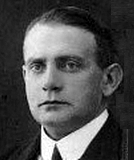
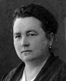
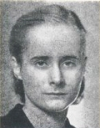
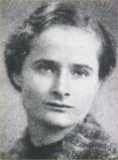
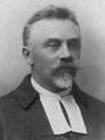
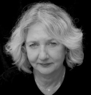

-
⇒ Fahle-Drosemeyer
|
Wilhelm Joseph Fahle
*/~ Rüthen St.Nik. 11./13.10.1805
Pate: Joseph Fahle
+ Hagen? 27.7.1860
Schraubenschmied, WO: Hagen
oo Hagen, St. Marien 28.4.1833
Josephine Sophia Lohbrun (Laubrunn)
* Brilon 30.3.1807 "illeg.", M: Clara Lohbrun
P: Helena Göbelgercken, Catharina Heitzig,
Henrico Becker
+ Hagen 8.7.1885
M: Anna Clara Lohbrun
* Brilon 3.9.1780, + 19.8.1836
E: Friedrich Lohbrun, Elisabeth Schmücker
oo Brilon/Alme/Altenbüren 22.11.1814
Franz Conrad Noggerath, * Bri. 15.11.1783,
daraus 7 Kinder, das 1. *1813 vorehelich
- Auguste Friederike Fahle * Hagen St. Mrien 13.2.1834 oo Hagen St. Marien 5.5.1855 Julius Rellensmann Lokomotivführer, bei Heirat wh. in Barmen, E: Gerh. Rellensmann u. Anna Wilh. Henriette Richwind in Rittershausen * 1826 (err.) Z: u.a. Richard Fahle
-
Joseph Wilhelm Fahle
Bäcker, Bremser, Wiegemeister
*/~ Hagen StKr. 26.8./5.9.1835
oo Hagen StKr. 3.8.1865
Marianna Elisabeth "Elise" Wiesel
* Hagen 1.2.1832
Eltern: Joh. Wilh. Wiesel,
u. Maria Agnes Hermanns in Westerbauer
WO: Hagen-Wehringhausen
Z: Richard Fahle in Wehringhausen
- Julius Fahle * 24.3.1866, ~ Hagen St. Marien 2.4.1866 P: Lokomotivheizer Richard Fahle in Wehringhausen, Lokomotivführer Julius Rellensmann in Hagen/Bahnhof Joseph Wilhelm Johann Fahle * Hagen 18.6.1870, ~ St. Marien 21.6. P: Joseph Fahle in Hagen, Ehefr. Fahle in Hagen Agnes Elisabeth Fahle * Hagen 12.6.1873, + 30.7.1873
-
Hugo Hubert Fahle
* Hagen 4.4.1875,
+ Butte, Montana, USA 15.5.1949,
Feb. 1899 Emigration in die USA,
dort: Hugo Henry Fahle
Restaurant-Inhaber
oo Butte, USA 25.7.1905
Emma Rose Loos, *25.9.1886, + März 1976
- Elizabeth Bertha Fahle * Butte 13.7.1906, + 18.6.2000 oo Butte 16.9.1929 John Hefferman, 1897-1970 Kinder: John Edward Hefferman 1930-2007, Marybeth Fleming Emma Helen Fahle * Butte 10.12.1908, + 21.5.2011 oo Butte 30.4.1934 Leonard R Goodland, 1909-1955 Kinder: Helen Bush, Janet Smith Emma Fahle * Butte 12.10.1915
-
Kaspar Hermann Richard Fahle
Schmied, Schlosser, "Königlicher Lokomotivführer",
wh. 1873 in Düsseldorf
* Hagen St. Marien 24.9.1837
oo Hagen St. Marien 2.7.1864
Johanna Catharina Hüser
* Hagen-Wehringhausen 20.5.1838, wh. in Düsseldorf,
Eltern: Hermann Hüser, Schlosser, u.
Theresia Dreisbach, in Düsseldorf
Z: Lokomotivführer Julius Rellendsmann v. Bahnhof/Hagen,
Bäcker Wilhelm Fahle dah.
- Hermann Joseph Fahle * Wehringhausen 28.4.1865, ~ Hagen St. Marien P: Jos. Wilh. Fahle, Julius Rellensmann, Witwe Sophia Fahle oo Grimlinghausen (Neuss) 2.2.1911 Elisabeth Ohling Josephine Friederike Fahle */~ Hagen 31.3.1867, ~ St. Marien 7.4. P:Ehefr. Friederike Rellendsmann in Hagen/Bahnhof, Schlosser Joseph Fahle in Elberfeld Caspar Hermann Richard Fahle * Hagen St. Marien 11.5.1869, + Hagen/Haspe 1930-1933 P: Elise Fahle aus Hagen Anm.: "1910-1911 cpl. in Haspe I / Ehe durch d. hg. Stuhl für nichtig erkl. / 1917 cpl. in Haspe" Dekorationsmaler, Stipendiat der Kunstgewerbeschule Düsseldorf 1888-1893, 1917 Bauunternehmer in Haspe, Nordstr.15, besaß die Mietshäuser Westerbauer Str. 23,25,27; o|o I. Haspe 1911 Berta Greschke aus Lüdenscheid oo II. Haspe 27.6.1917 Wilhelmine Kirchhoff * Düsseldorf 2.8.1877 Louise Gertrud Fahle * Wehringhausen 23.3.1871, ~ St. Marien 12.4. P: Schlosser Joseph Fahle in Wehringhausen, Werkmeister Julius Rellendsmann in Mülheim a. Rhein Joseph Richard Fahle * Düsseldorf 17.1.1874 (Josef Fahle * 1874, + Düsseld. 1935) Johanna Maria Therese Fahle * Düsseldorf 7.10.1875
- weitere Kinder * Hagen, ~ St. Marien: Friedrich Heinrich Fahle * 7.7.1839, + 6.6.1840 P: Heinrich Nöggerath (Stiefonkel) u.a. Juliana Fahle * 1.10.1840, + 1.8.1841 P: Juliana Nöggerath (Stieftante), Heinrich Fahle, u.a. Lisette Fahle * 24.6.1842, + 17.7.1843 Heinrich Fahle * 6.6.1844, + 29.8.1844 Hermann Fahle * 12.7.1845, + 8.12.1846 Kaspar Heinrich Fahle * 31.8.1847, + 20.11.1847
-
Joseph Fahle
* Hagen St. Marien 29.11.1848
+ Hagen 2.4.1893
Bahnbeamter, Lokführer, sp. Gastwirt in Altenhagen
oo Hagen StKr. 24.5.1873
Wilhelmine (Mina) Henriette Hülse
* Hagen 22.1853, + Bochum 2.3.1904
Eltern: Wilhelm Hülse u. Henriette Hetfeld
in Altenhagen (Hagen)
Z: Lokomitivführer Richard Fahle in Düsseldorf
WO: Hagen-Wehringhausen
- Wilhelm Fahle * Hagen 20.11.1873, + 17.8.1874 P: Wilh. Hülse in Altenhagen, Wilh. Fahle in Wehringhausen, u.a.
-
Emil Fahle

Emma Vogdt
* Hagen 21.4.1875, ~ Hagen St. Marien 2.5. P: Joh. W. Fahle, Wehringhausen + Berlin 24./26.6.1929 (54J.), [] Reval, Moikscher FriedhofHandelsschule in Hagen, kaufm. Ausbildung; ab 1895 in Reval (Tallinn, Estland) bei Zellulosefabrik Ernst Osse und Co., ab 1899 Direktor, ab 1904 Alleininhaber, ab 1909 Bau von Papierfabriken; 1913 Mitgründer und Generaldirektor der AG Nordische Papier- und Zellstoffwerke, ab 1920 Mehrheitsbeteiligung, 1920 Übernahme der AG Rigaer Papierfabriken, Expansion zu einer der größten Papier- und Zellulosefabriken Osteuropas; vielfältige Wohltätigkeitsarbeit; Vorsitzender des Estnischen See-Yacht-Clubs.
oo Reval (=Tallinn, Estland) 19.4./1.5.1897 Emma "Emmy" Louise Vogdt * Johannishof (=Rae) bei Reval 24.2.1874 Eltern: Emil Martin Vogdt *Thomel,Estl.1826 +1898, Cäcilie Caroline Martens Reval 1841-1884-
Gertrud ("Tutti") Cäcilie Wilhelmine Fahle
* Reval 28.4./10.5.1898, + 23.7.1989
Herrin auf Wurchow (Pommern)
1919 wohnhaft in Bonn
oo Berlin 29.5.1920
Kurt Georg Karl Wilhelm von Borries
* Gardelegen 9.7.1890
+ Konstanz 19.1.1964
Sohn des Rittmeisters Wilh. v. Borries u. Anna Sophie Heymann; Oberstleutnant; Besitzer des Allodial-Ritterguts Bergen/Schlesien, südl. von Breslau
-
Hannelore von Borries

* Charlottenburg 25.1.1921 + Belgard 8.3.1945gemeinsamer Selbstmord mit Zwillingsschwester Rosemarie beim Einmarsch der Roten Armee
oo Bergen/Kr.Belgard 1940, Hans-Joachim von Arnim aus dem Hause Falkenhagen * 1917, ⚔1943 Hauptmann der Luftwaffe (ein Sohn) -
Rosemarie von Borries

* Charlottenburg 25.1.1921 + Belgard 8.3.1945gemeinsamer Selbstmord mit Zwillingsschwester Hannelore beim Einmarsch der Roten Armee
oo Bergen/Kr.Belgard 1939, Karl-Werner Grote zu Schauen * Dessau 1907 - ... Major (ein Sohn) dieser oo II Konstanz 1964 Armgard Uhde von Reichenbach - Lieselotte von Borries * Bergen/Kr.Belgard 22.5.1924 + 17.11.1946
- Kurt-Wolf von Borries * Bergen/Kr.Belgard 26.2.1928 + Köln 24.3.1985 Bildhauer u. Grafiker oo Konstanz 1954 Marie-Anne Schlieper 1928 - 2005 (2 Söhne, 1 Tochter)
-
Hannelore von Borries
-
Werner Emil Joseph Fahle
* Reval 4.1.1900, + Berlin 29.3.1970
Dr. jur., Univ. Bern; Dissertation/Publikation: "Die Agrarreform der Republik Estland" (Brandenburg 1922); Landesverbandsvorsitzender der Vereinigung der Ostzonengeschädigten und Verfolgten;
oo vor 1923, o|o 1948 oder davor Margarethe "Gretchen" Winkler * St.Jürgens, sö. Reval (8.|27.?)10.1897 Die Familie wurde 1940 aus Estland umgesiedelt
ihre Eltern: > Rudolf Adam von Winkler 1855-1917, ev. Pfarrer und Religionslehrer am Dom zu Reval, oo 1885 Marie Julie Elis. von > Hörschelmann, 1866-1952sie 1948 mit Kindern Doris u. Heinz ausgew. nach Rio de Janeiro/BRA
-
Doris Margarethe Emma Marie Fahle
* Reval/Tallinn 12.9.1923
Ev. Internatsschule Wieblingen bei Heidelberg, 1942 Abitur; Klassenkameradin und beste Freundin von Maria von Wedemeyer (1924-77), der sp. Verlobten Dietrich Bonhoeffers; sie wird mehrfach erwähnt in Briefen Wedemeyers an Bonhoeffer, veröffentlicht in "Brautbriefe Zelle 92 - 1943-45", München 1992; 1948 gemeinsam mit Bruder Heinz und Mutter ausgewandert nach Rio de Janeiro/BRA
oo I. 1949 (23.2.1951?) Karel Jan André Guyon Collot d'Escury, Baron * Laon/Frankr. 29.8.1922 Chef... KLM; Wohnort: Montevideo/Uruguay; + 1950/51 (im Jan.1950 Passverl. beantragt,im Mrz.1951 Ehefrau als Witwe bez.); sein Großvater gleichen Namens war zw. 1884-1929 Bürgermeister in Zeeland, NL; Sohn: Hendrik Andre Guyon Collot d'Escury *1949
oo II. 1954 Harald ("Harry") Eugen Alexander Siré * Reval/Tallinn 24.4.1924 Dipl.-Ing. Mashinenbau; Dir. d. Techn. Verw. der Univ. Montréal/CAN; Kinder: Hendrik, Andre Guyon, Cora, Margaret Siré-
Cora Siré

* 1957 Schriftstellerin in Montréal 1974: Trafalgar School for Girls Adr.: 100 King's Rd., Pointe Claire, Que. (http://www.quena.ca/)
-
Cora Siré
- Emil Werner Ben Fahle * Reval/Tallinn 24.11.1924 + 5.3.1945, in Schlesien gefallen Heinz Emil Rudolf Fahle * Reval/Tallinn 18.2.1926 1948 gemeinsam mit Schwester u. Mutter ausgewandert nach Rio de Janeiro/BRA
-
Doris Margarethe Emma Marie Fahle
* Reval/Tallinn 12.9.1923
-
Gertrud ("Tutti") Cäcilie Wilhelmine Fahle
* Reval 28.4./10.5.1898, + 23.7.1989
Herrin auf Wurchow (Pommern)
1919 wohnhaft in Bonn
oo Berlin 29.5.1920
Kurt Georg Karl Wilhelm von Borries
* Gardelegen 9.7.1890
+ Konstanz 19.1.1964
-
Sophie Julie Fahle
* Hagen 21.9.1876
P: Julie Wiesel, Henriette Hülse, beide Hagen
Auguste Johanna Fahle
* Hagen 20.7.1878
Elisabeth Fahle
* Hagen 14.10.1884
Wilhelm Richard Fahle
* Hagen 12.5.1886
P: Wilhelm Fahle
Dipl.-Ingenieur;
1920 Leiter der von seinem Bruder Emil 1920 erworbene Papierfabrik in Ligat Lettland; 1942 GF der übernommenen enteigneten polnischen Zigarettenpapierfabrik Solali in Saybusch/Oberschl.
-
Fritz Fahle
* Hagen 21.4.1888, + LA, USA 8.3.1960
P: Richard Fahle, Friederike Fahle
1907 Immigration in die USA
WO: Los Angeles (1926/27 San Diego),
1910 Musiker, 1917 Violinist, 1926/27 Koch bei
John P. Mills, Immobilien- u. Öl-Unternehmer in San Diego,
1930 Arbeiter bei „Oil Mills“, 1940 Hotelkoch
1960 seit 13 Jahren Firmeninhaber der "Accurate Phenolics Inc.,"
Fertigung von Kunstoffteilen f. Werkzeugmaschinen
oo Long Beach, CA 28.12.1923
Irma Bell Galbraith
* Minnesota 12.6.1885, + Feb. 1978
E: Wilson B Galbraith, Minnie L Lawrence
zul. wh.: Los Angeles,
North Hollywood, 12537 Houston St.
- Elizabeth "Betty" Irma Fahle * Long Beach, Los Angeles 28.12.1923 oo I. Nevada, Clark County 16.12.1947 o|o Los Angeles Aug. 1966 Rymond Ernest Balogh, * Ohio 1922, + LA 1981 Arbeiter in Kunststoff-Fabrik Kinder: Dieter *1949, Howard Raymond *1950